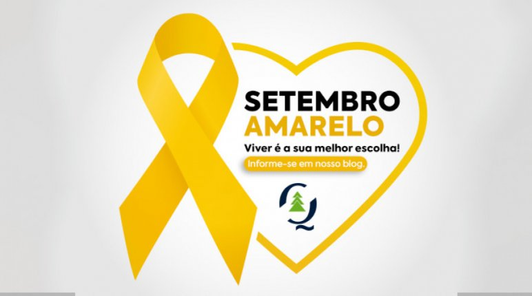

O Setembro Amarelo é o mês (de 1 a 30 de setembro) dedicado à prevenção do suicídioTrata-se de uma campanha, que teve início no Brasil em 2015, e que visa conscientizar as pessoas sobre o suicídio, bem como evitar o seu acontecimento.
Em 2024, o lema é :“Se precisar, peça ajuda!”.
O mês foi escolhido porque o dia 10 de Setembro é tido internacionalmente como o Dia Mundial de Prevenção do Suicídio. A data tornou-se símbolo da luta desde 1994, quando Mike Emme, um jovem de 17 anos, cometeu suicídio nos Estados Unidos
Encontre ajuda De acordo com os dados da cartilha "Informando para prevenir", publicada pela ABP e pelo CFM, 96,8% dos casos de suicídio registrados estão associados com histórico de doenças mentais, que podem ser tratadas. A informação correta direcionada à população é muito importante para orientar e prevenir o suicídio. O reconhecimento dos fatores de risco e dos fatores protetores é fundamental e pode ajudar. Se você acha que está tendo problemas relacionados à sua saúde mental ou conhece alguém que está passando por alguma dificuldade, procure um de nossos psiquiatras associados ou uma de nossas federadas
